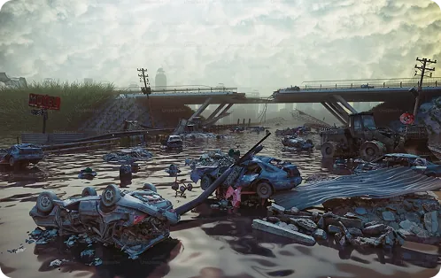
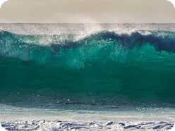
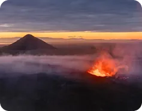

Natural Disaster Survivor
Prepare-se para entrar em um verdadeiro teste de coragem e conhecimento! O quiz de desastres naturais vai desafiar você a tomar decisões rápidas em situações de sobrevivência, onde cada escolha pode representar a diferença entre estar seguro ou correr perigo. Inspirado no conteúdo do site, o jogo traz perguntas eletrizantes sobre enchentes, terremotos, furacões, incêndios e outros fenômenos que podem acontecer a qualquer momento. Muito mais do que um simples jogo, ele é uma jornada emocionante de aprendizado, que mistura adrenalina com informação prática, ajudando você a descobrir quais atitudes realmente podem salvar vidas em situações extremas.
Clique aqui para ver o pódio

